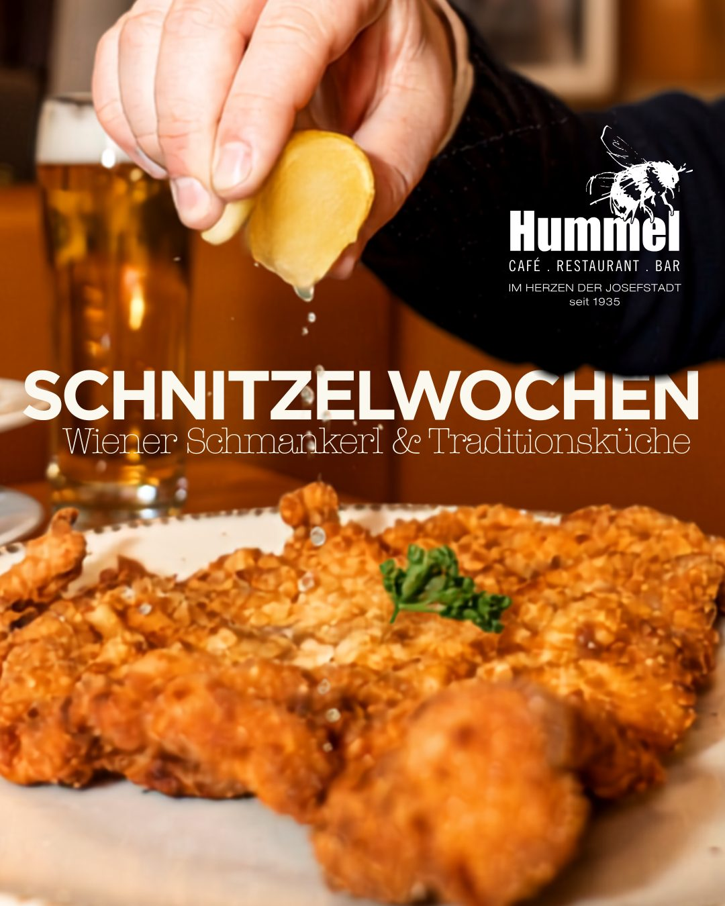

Mit ohne Gluten
Unseren Klassiker gibt es auch ganz ohne Getreide: das glutenfreie Wiener Schnitzel.
Start › Karte
Für Feinschmecker
Von traditionell bis ganz im Trend, von vegan bis zum gepflegten Wiener Schnitzel – hier wird jeder fündig.
Regionalität, Saisonalität und die österreichische Gastfreundschaft stehen bei uns an erster Stelle. Verzaubern Sie Ihren Gaumen mit unseren Speisen und Getränken – zu diesen Zeiten:
Täglich von 8 bis 12 Uhr
Das erste Heißgetränk zu jeder Frühstückskombination kostet nur € 3,50. Ein Croissant statt Gebäck servieren wir gegen einen Aufpreis von € 1,30.
„Early Bird“: Kaffee zwischen 8 und 9 Uhr nur € 2,50. Prickelnd in den Tag: 1 Glas Hummel Bio-Sekt, Grüner Veltliner oder Rosé, € 5,60.
Täglich von 8 bis 22 Uhr
Von der Bäckerei Schwarz aus Wien & Bäckerei Schmidl aus der Wachau
Täglich von 8 bis 22 Uhr
Weil Genuss bei uns keine Uhrzeit kennt.
Täglich ab 11 Uhr
Vorspeisen und Salate – das Beef Tatar ist als Vorspeise ideal zum Teilen, einen zusätzlichen Teller bringen wir gerne dazu.
Hummel Schnitzel Liebe
Unsere Schnitzel gibt es übrigens auch glutenfrei, Aufpreis € 2,50.
Süß
Beim Kaiserschmarren bitte rund 20 Minuten Genusszeit einplanen.
Eine Tasse Hummel Zeit
Kaffee von der Naber Kaffee Manufaktur aus Wien in Bio-Fairtrade-Qualität. Alle Kaffeekreationen sind koffeinfrei, mit laktosefreier Milch oder Haferdrink erhältlich – ohne Aufpreis.
Purer Genuss aus dem Demmers Teehaus, in der Kanne serviert – € 5,90.
Bio Darjeeling HimalayaBio AssamBio Earl GreyWaldfrüchte CocktailBio Vata AyurvedaBio Green Manjolai FairtradeBio Rooibos MuntermacherBio PfefferminzeBio Vital Oasen KräuterteeBio Kamillentee
Getränke
Weinkarte
Werfen Sie einen Blick in unseren Weinschrank im Durchgang zur Bibliothek. Hummels Weinservice: zu jeder Flasche gibt es 1 Flasche Vöslauer 0,75 l still oder prickelnd gratis dazu.
Digestif
Für unsere kleinen Gäste
Und wenn das Essen noch dauert: Kennst du schon unsere Spielecke mit dem schwungvollen Schaukelpferd?
A glutenhaltiges Getreide · B Krebstiere · C Ei · D Fisch · E Erdnuss · F Soja · G Milch oder Laktose · H Schalenfrüchte · L Sellerie · M Senf · N Sesam · O Sulfite · P Lupinen · R Weichtiere
Alle in der Karte angeführten Preise sind Inklusivpreise in Euro. Stand: Sommerkarte 2026.
Gutscheine zu € 5,–, € 10,– oder für das „Frühstück zum Teilen“ erhalten Sie direkt im Café Hummel, in der Hummel-App oder online per QR-Code zum Ausdrucken.
Mittagsmenü · 11 bis 15 Uhr
Montag bis Freitag von 11 bis 15 Uhr (außer an Feiertagen) wartet ein frisch gekochtes Mittagsgericht – Klassiker-Tag von Montag bis Mittwoch, Hendl-Tag am Donnerstag, Fisch-Tag am Freitag, jeweils € 13,00. Wahlweise mit Gemüsecremesuppe der Saison, Frittatensuppe oder Salat + € 2,00. Alternativ Cremespinat mit Spiegelei und Petersilerdäpfeln um € 13,00. Am Wochenende und an Feiertagen gibt es hausgemachte Wiener Hausmannskost – fragen Sie unsere Herren Ober nach dem aktuellen Plan. Natürlich gibt es alle Spezialitäten auch zum Mitnehmen.
Buchstaben hinter den Gerichten sind die Allergenkennzeichnungen laut Aushang; Allergene für den jeweiligen Mittagsteller erfragen Sie bitte bei unserem Servicepersonal.
Krautfleckerln mit Jägersalat A G O M L
Cremespinat mit Spiegelei und Petersilerdäpfeln oder geröstete Knödel mit Ei und Salat A C G M O L
Geselchter Schopfbraten mit Sauerkraut und Serviettenknödel A C G L O
Reisfleisch mit Gurkenrahmsalat A G M L O
Portionsbrathuhn mit Gemüsereis L
Seehechtfilet gebacken mit Erdäpfel- oder Mayonnaisesalat A C G M O D
Alt Wiener Kalbs-Salonbeuschel mit Serviettenknödel A C G M L O
Aktion
Knusprige Panier, zartes Fleisch und klassische Beilagen: Im Café Hummel stehen die nächsten Wochen ganz im Zeichen eines der beliebtesten Gerichte der Wiener Küche. Neben bewährter Tradition kommen auch besondere Variationen auf den Teller.
Zu einem guten Schnitzel darf das passende Bier nicht fehlen. Wir empfehlen Birra Moretti, ein feinherbes, goldgelbes italienisches Lagerbier, frisch vom Fass gezapft und angenehm leicht.

Saison
Bei uns im Hummel wird die Gansl zweimal täglich frisch im Rohr gebraten. Dieses Jahr mal Gans anders: zum Liefern und Abholen über MJAM, die Café-Hummel-App oder telefonisch unter +43 1 405 53 14.
Dazu empfehlen wir: Junger Wiener, Weingut Mayer am Pfarrplatz – 1/8 l € 3,70, Flasche 0,75 l € 22,20.
Zu Ostern servieren wir wieder unsere besonderen Oster-Schmankerl:
Auch zum Mitnehmen. Reservierungen gerne unter 01 / 405 53 14 oder reservierung@cafehummel.at.
Gut zu wissen
Unseren Klassiker gibt es auch ganz ohne Getreide: das glutenfreie Wiener Schnitzel.
Von traditionell bis ganz im Trend, von vegan bis zum gepflegten Wiener Schnitzel – hier wird jeder fündig.
Spargelwochen mit Bio-Spargel aus dem Marchfeld, Steirer Wochen, Herings-Schmaus, Wiener Festtagsplatte – die Karte folgt dem Jahr.
Montag bis Freitag von 8 bis 9 Uhr kostet jeder Kaffee € 2,50. Die frühe Hummel fängt den Tag.
Bei jedem Frühstück ein Stempel. Bei Abgabe des Passes mit zehn gesammelten Stempeln lädt Sie das Haus als Dankeschön ein.
Alle Speisen und Heißgetränke in recycelbarer Verpackung zum Mitnehmen – oder über MJAM, Wolt und die Café-Hummel-App nach Hause.